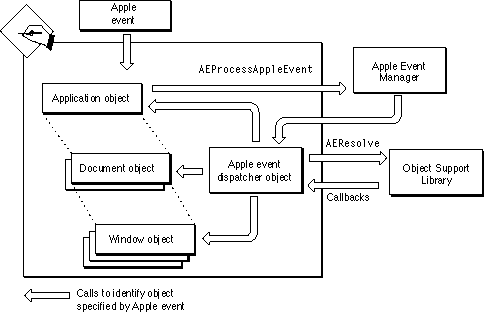

MacApp's Scripting Model
MacApp supports the Apple event object model (described on page 140). MacApp uses a global Apple event dispatcher object to serve as an intermediary between the Apple Event Manager (and its Object Support Library component) and the objects in your application that can respond to Apple events.The objects in a MacApp application are organized in a hierarchy that extends from the application object, to its document objects, to the documents' window objects, and to the windows' view objects. This hierarchy is shown in Figure 1-1 on page 7. An object in the hierarchy that needs to respond to Apple events mixes in the multiple inheritance class
MScriptableObject. That enables the object to describe itself in terms that the OSL can understand, to contain other Apple event objects (such as shapes, paragraphs, words, styles, and so on), to get and set object properties for the objects it contains, and to have an attached script (which can respond to Apple events sent to the object).Apple Event Targets
MacApp's Apple event dispatcher object works with the Apple Event Manager, the OSL, and the scriptable objects in the application's object hierarchy to determine which object is the target for an Apple event, and to hand the event off to that object. If a specified object has an attached script, the script gets first shot at handling the Apple event. If an event doesn't specify a target, it is sent to the default target. MacApp specifies the application object as the default Apple event target, with the following line of code (from theIApplicationmethod):TOSADispatcher::fgDispatcher->SetDefaultTarget(this);
- Note
- The target specified by an Apple event can be a MacApp object (such as a window) or a simpler Apple event object (such as a paragraph of text). However, the target MacApp passes the event to is always a MacApp object that mixes in the
MScriptableObjectclass. A MacApp object is a typical C++ object, with code and data, that can perform actions. An Apple event object, such as a paragraph of text, may consist of data only and be unable to perform actions. A MacApp object provides access to the Apple event object it represents or contains.An Example of the Object Model in Action
Suppose an application receives an Apple event equivalent toSet the color of the first red circle in the window "Test Shapes" to blueThe application object calls the Apple Event Manager routineAEProcessAppleEventto dispatch the Apple event. The Apple Event Manager calls a callback method of the application's Apple event dispatcher object, which in turn calls the Object Support Library routineAEResolveto find the Apple event object specified by the event (in this case, the first red circle).Figure 6-1 Resolving an object specified by an Apple event

The
AEResolveroutine makes a series of calls to application callback routines to help locate the specified Apple event object. In MacApp, those callback routines are methods of the Apple event dispatcher object, installed during initialization of MacApp's UScripting unit. The Apple event dispatcher callback routines in turn make calls on application objects (but only those that mix in theMScriptableObjectclass) to find the information requested by the OSL.Figure 6-1 shows how MacApp objects communicate with the Apple Event Manager and the OSL to resolve an object specifier.
How does the shape-drawing application actually change the color of the specified circle? MacApp's application class knows how to return a contained window that matches a particular name. In a shape-drawing application, a window object knows how to return a contained circle shape. A shape object mixes in the
MScriptableObjectclass and overrides theGetObjectPropertymethod to return its current color and theSetObjectPropertymethod to set a new color. In addition, a shape overrides theGetCommandContextmethod to return its document as the context for a command that changes the shape. If the application contains a window with the specified name and the window contains a red circle shape, the circle handles the Set Data Apple event by setting its color to blue. (For more information, see "Recipe--Setting Object Properties With Apple Events," beginning on page 355 and "Recipe--Overriding the GetContainedObject Method," beginning on page 368.)This mechanism supports Apple event object hierarchies of arbitrary complexity. For example, a more complicated Apple event might require repeated iterations of the following steps:
The process of returning contained objects continues until the object specified by the Apple event is identified and given the opportunity to respond to the event.
- Get a contained object with a specified property.
- Get a contained object with a specified property from the previously returned object.